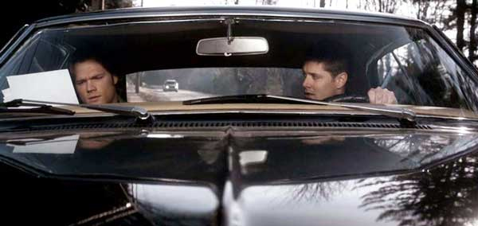

Лоуренс официально стал символом сериала Сверхъестественное

В американском штате Канзас находится городок Лоуренс, который теперь носит имя малой родины Дима и Сэма Винчестеров. Напомним, что 20 ноября 2020 года в эфире появится финальная серия, где приготовлено массу сюрпризов и завершение длительной и интересной истории приключений главных героев.
Один американский городок теперь считается родиной братьев Винчестеров
У города есть официальная страница в социальной сети, где на честь окончания финального 15-го сезона решили опубликовать новость о том, что мэр лично решила посвятить город главным персонажам истории, и рассказала, что теперь они могут считать его родным. Она считает, что братья никогда не оставались идеальными, часто нарушали законы и переходили все границы, но при этом старались спасать окружающий мир и убивали коварную нечисть, вредящую людям. Для них справедливость оставалась на первом месте, а это многого стоит. Именно парни могут считаться настоящими жителями Канзаса, ведь запросто справляются с трудностями.
Джаред Падалеки, известный по роли Сэма, решил ответить на данный пост и рассказал, что безумно гордится подобными заявлениями, а ранее и представить не мог, что будет ожидать такая популярность. А также, он задает вопрос, сможет ли кто-то навсегда отменить штрафы, касающиеся превышения скорости. Такое он решил провернуть ради Детки. Оказывается, что таким ласковым словом парни всегда называют автомобиль, что постоянно маячил в кадре с родственниками.
После окончания съемок, машины (в сериале одновременно использовалось несколько автомобилей «Импала») отправились в личные гаражи Дженсена Эклса и Джареда Падалеки. Актеры получили ее в подарок от создателей проекта, как благодарность за многолетний труд.
Первая серия увидела мир в дальнем 2005 году, и вот все годы поклонники тщательно следили за развитием сюжета, переживали вместе с главными героями и верили в победу над злыми силами. Недавно, фанаты могли наслаждаться снимками с последнего рабочего дня, что появились на страницах большинства актеров.